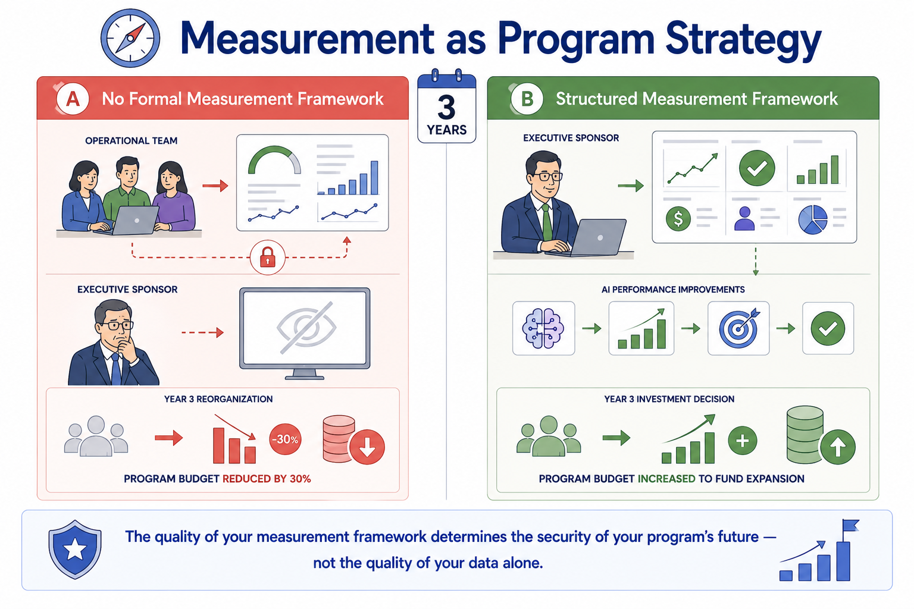
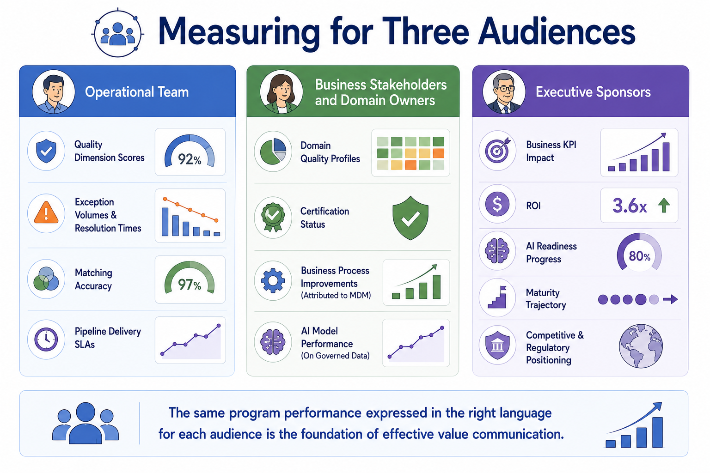
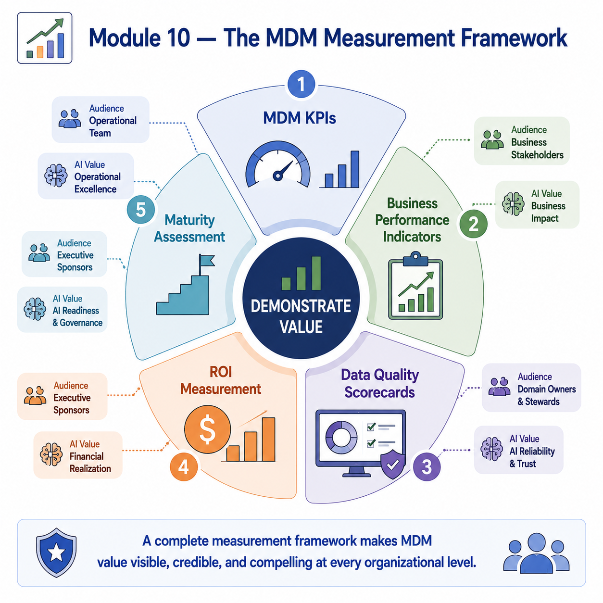

Measuring Success and Value
Module support notes
Why Measurement Is a Strategic Discipline
Measurement is not a reporting obligation that follows program delivery — it is a strategic discipline that shapes whether the program continues to receive the investment it needs to grow. Programs that measure their own operational performance but fail to connect those measurements to business outcomes and AI value consistently find that their value is invisible to the leaders who control their budget.
Programs that translate operational performance into business language — revenue impact, cost reduction, AI model improvement — consistently report stronger executive support, more secure budgets, and faster approval for program expansion.
Warning
The quality of your measurement framework determines the security of your program's future — not the quality of your data alone. A program that improves customer data quality by 40% but never connects that improvement to revenue, cost, or AI model performance will lose its budget in the next reorganization. A program with more modest technical results that documents a clear business value chain will not.

The Three Measurement Audiences
MDM measurement must serve three distinct audiences simultaneously — and what constitutes a compelling metric for one audience often has little resonance with another. Operational teams need the technical precision of quality dimension scores and workflow SLA compliance. Business stakeholders need domain-level quality profiles connected to process improvements they recognize. Executive sponsors need business KPI impact and ROI expressed in financial terms, alongside AI readiness progress that connects MDM investment to the strategic AI agenda.
A measurement framework that serves all three audiences well — translating the same underlying operational performance into appropriately calibrated language for each — is the most effective tool for sustaining the multi-level alignment that MDM programs require.
Note
The same program performance expressed in the right language for each audience is the foundation of effective value communication. Operational teams need quality scores and SLA metrics. Business stakeholders need domain quality profiles and process improvement attribution. Executive sponsors need ROI, business KPI impact, and AI readiness trajectory. One measurement program, three reporting views — each calibrated to what makes performance visible and credible to that audience.

A complete measurement framework makes MDM value visible, credible, and compelling at every organizational level — covering the five components that together tell the full value story.
